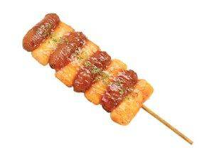
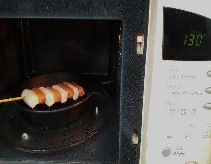
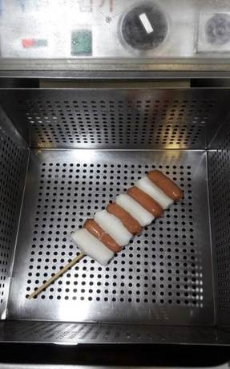
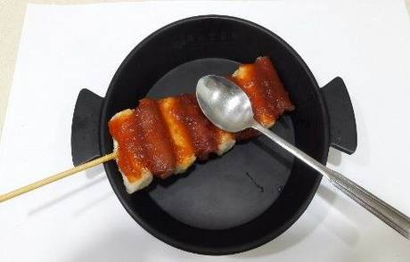
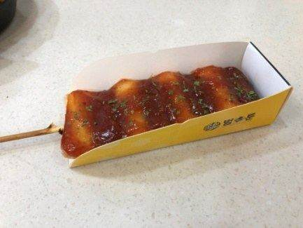
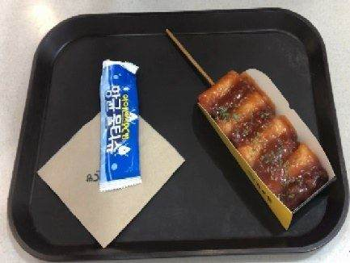

| 메뉴명 | 소떡소떡 |
|---|
| 판매가격 | 4,000원 |
|---|
| 원재료 | 소떡소떡, 양념치킨소스, 파슬리 |
|---|
| 사용 부자재 | 핫도그트레이 |
|---|
| 메뉴특징 | 육즙이 가득한 소시지와 쫀득한 떡을 꼬치에 꽂아 간편하게 먹을 수 있는 매콤달콤한 메뉴 |
|---|
조리방법

1
소분한 냉동 소떡소떡 1개를 700W 전자레인지에 1분간 돌린다.

2
해동된 소떡소떡을 180도 튀김기에 넣어 2분간 튀긴다.
※튀긴 후 기름 충분히 제거하기

3
튀긴 소떡소떡 한쪽면에 양념치킨소스 40g을 뿌린 뒤, 숟가락으로 펴 발라준다.

4
핫도그트레이를 조립한 뒤, 소떡소떡을 담고, 파슬리를 뿌려 완성한다.

5
트레이에 올린 뒤, 물티슈, 냅킨과 함께 제공한다.